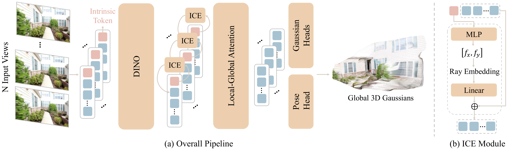
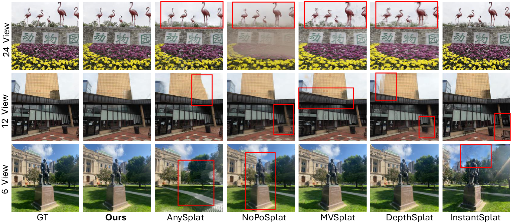
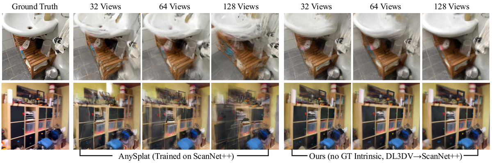

YoNoSplat
简单摘要
从非结构化图像集合中快速、灵活地重建 3D 场景仍然是一个重大挑战。我们通过新颖的成对相机距离归一化方案以及将相机内在函数嵌入到网络中进一步解决了尺度模糊问题。

设计一个能够概括这些不同设置（不同数量的视图、摆姿势或未摆姿势、校准或未校准）的单一模型仍然是一个开放的挑战。最近的无姿态方法通过将高斯直接预测到统一的规范空间中，在稀疏输入（2-4 个视图）上显示出令人印象深刻的结果。
核心创新
第一，为了克服联合学习 3D 高斯和相机参数的固有困难，我们引入了一种新颖的混合训练策略。
第二，我们通过一种新颖的成对相机距离归一化方案以及将相机内在函数嵌入到网络中进一步解决了尺度模糊问题。
第三，我们引入了一种从多个图像中前馈预测 3D 高斯函数的方法。
技术细节
通过从训练数据中学习几何和外观先验，我们的方法直接重建新场景，而不需要耗时的优化。规范预测 前馈重建模型的基本设计选择是其输出空间。这种设计通过使用预测的姿势进行聚合来实现无姿势重建的主要目标。

3.1 高斯输出空间分析及训练策略
规范预测 前馈重建模型的基本设计选择是其输出空间。这种设计通过使用预测的姿势进行聚合来实现无姿势重建的主要目标。这种灵活性对于现实世界的应用至关重要，例如地图重建，其中需要与预先存在的准确姿态分布对齐。
3.2 模型架构
我们建立在 Vision Transformer (ViT) 主干之上，并采用 VGGT 中的局部全局注意力机制来实现稳健的多视图特征融合。此外，对相机内在函数的调节有助于解决尺度模糊问题，如第 2 节中详细介绍的。具体来说，我们将一个内在令牌与输入图像令牌连接起来，然后由编码器网络进行处理，从而允许内在令牌聚合图像信息。
3.3 解决量表歧义
随后，为了实现内在调节，将预测参数转换为相机光线，通过线性层以获得嵌入特征。当真实内在函数可用时，我们直接使用它们来提供更准确的调节，从而实现更好的性能。在没有它们的情况下，我们改为使用预测的内在函数进行网络调节。
3.4 模型训练
在训练过程中，我们随机采样 4 个目标视图，并使用其地面实况相机姿势渲染相应的图像，然后将渲染的图像与地面实况图像进行比较。具体来说，对于每对输入视图及其预测姿势，我们首先计算它们的相对姿势。损失计算如下，其中 是输入视图的数量。
3.5 评估
为了在与姿势相关的设置中进行评估，我们使用相应的地面实况相机姿势来渲染目标视图。为了忠实地评估高斯重建的质量，我们遵循先前的无姿势方法，首先预测目标相机姿势，然后使用这些预测姿势渲染图像以进行评估。目标相机姿态的预测如下，它通过基于预测的 3D 高斯的光度损失来优化姿态。
$$ f_{\boldsymbol{\theta}}:\left\{\left(\boldsymbol{I}^v\right)\right\}_{v=1}^V \mapsto\left\{ \cup \left(\boldsymbol{\mu}_j^v, \alpha_j^v, \boldsymbol{r}_j^v, \boldsymbol{s}_j^v, \boldsymbol{c}_j^v\right) , \boldsymbol{k}^v, \boldsymbol{p}^v\right\}_{j=1,\dots,H \times W}^{v=1,\dots,V}. $$
这条式子给出了论文中的一条核心计算关系。理解时重点看左侧最终输出是什么，以及右侧各部分分别承担什么作用。
$$ \mathcal{L} = \mathcal{L}_{\text{image}} + \lambda_{\text{intrin}}\mathcal{L}_{\text{intrin}} + \lambda_{\text{pose}}\mathcal{L}_{\text{pose}} + \lambda_{\text{opacity}}\mathcal{L}_{\text{opacity}}. $$
这条式子给出了训练阶段的优化目标。阅读时可以先看左侧到底在约束什么，再区分右侧每一项对应的是重建误差、正则项还是辅助监督。
$$ \mathcal{L}_{\text{R}}(i, j) = \arccos((\operatorname{tr}\left((\mathbf{R}_{i \leftarrow j})^\top \hat{\mathbf{R}}_{i \leftarrow j}\right) - 1) / 2), \mathcal{L}_{\text{t}}(i, j) = \mathcal{H}_{\delta}(\hat{\mathbf{t}}_{i \leftarrow j} - \mathbf{t}_{i \leftarrow j}). $$
这条式子给出了训练阶段的优化目标。阅读时可以先看左侧到底在约束什么，再区分右侧每一项对应的是重建误差、正则项还是辅助监督。
实验结论
实验部分主要围绕 与最先进的方法相比，我们具有分辨率输入 ( ) 的模型已经实现了最佳性能 展开。结果表明，在这里，我们展示了在无姿势、无校准设置下的结果，与 ScanNet++ 上依赖姿势的方法 DepthSplat 定性比较相比，它仍然产生更高质量的新颖视图渲染。


4.1 实验装置
实验部分主要围绕 为了泛化，我们通过使用固定目标视图对每个序列的视图进行采样来评估 ScanNet++ 上的 DL3DV 训练模型 展开。结果表明，基线 我们在新颖的视图合成上与 SOTA 代表性稀疏视图可推广方法进行比较。
4.2 实验结果与分析
实验部分主要围绕 表中的结果还表明，随着输入视图数量和场景规模的增加（例如 12 和 24 视图），提供真实的外部参数可以进一步提高性能 展开。结果表明，如选项卡所示，尽管 AnySplat 具有训练领域优势，但我们的模型在所有指标和视图计数方面均显着优于此基线。
4.3 消融研究
实验部分主要围绕 对于这种消融，我们仅使用 6 个输入视图来训练模型，以实现更快的训练，而不影响通用性 展开。结果表明，混合强制平衡了这些权衡，实现了最佳的无姿势结果，同时在依赖姿势的情况下保持竞争力，从而产生更强大和通用的模型。
理解评价
如果把这篇论文放回问题背景里看，它真正的价值在于：从非结构化图像集合中快速、灵活地重建 3D 场景仍然是一个重大挑战。这说明作者不是只补一个局部模块，而是在重新组织问题该怎样被解决。
最能支撑这个判断的，还是实验给出的证据：我们提出了 YoNoSplat，一种前馈模型，可以从任意数量的图像重建高质量的 3D 高斯分布表示。换句话说，这些设计并不只是概念上更完整，而是实实在在改变了最终结果。
当然，它离真正成熟的方案还有距离：当前方案的局限在于它仍然受制于计算资源、输入质量或场景复杂度，距离真正稳健的大规模部署还有差距。后续更值得继续推进的方向，是 后续更值得继续推进的方向，是未来继续提升效率、泛化能力以及在更复杂场景下的稳定性。